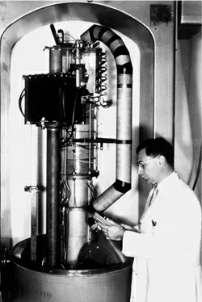

1. Two patients, two very different futures
The chapter begins in 2004 with a twenty-four-year-old athlete named Ben Orman. He notices a small lump in his neck while reading. At first, he dismisses it as the kind of minor swelling an active person might acquire without remembering how. But it grows, and eventually he visits a doctor.
The lump turns out to be only the visible tip of a larger series of enlarged lymph nodes stretching into his chest. Tests and a biopsy reveal Hodgkin's disease, a type of lymphoma. His cancer is classified as stage IIA: it is located in a limited region on one side of the diaphragm, and he does not have the systemic symptoms used in the book's staging description.
Mukherjee explains that Ben has a very good chance of being cured with treatment—approximately 85% in the situation described in the book. But treatment will be difficult, with months of chemotherapy and risks that include infection, infertility, and even later cancers.
2. Beatrice Sorenson: The opposite experience
Soon afterward, Mukherjee sees Beatrice “Bea” Sorenson, a seventy-six-year-old former marine with pancreatic cancer. Bea is physically tiny but spirited and determined. Her tumor had been discovered after abdominal symptoms led to a scan.
A surgeon attempted to remove it, but cancer remained at the edges of the operation. Radiation and a chemotherapy drug called 5-fluorouracil did not stop it. Another drug, gemcitabine, was tried; the disease still progressed and spread to her liver.
Bea and her husband ask whether anything else is available. The doctors struggle to answer. Despite her determination, the treatments they have offered cannot control the cancer. Bea finally acknowledges that they have reached the end of what can reasonably be tried.
The emotional reversal is striking: she finds herself comforting the doctors, who are embarrassed by their inability to help.
3. Why calling both illnesses “cancer” can mislead us
Ben and Bea both have malignant cell growth. But their diseases are profoundly different in biology, treatment response, and likely outcome.
| Ben Orman's Hodgkin lymphoma | Bea Sorenson's pancreatic cancer |
|---|---|
| Disease described as regionally limited | Residual disease after surgery, then liver metastases |
| Strong prospect of cure with chemotherapy | Several treatments failed to control progression |
| Treatment is harsh but potentially curative | Treatment options have become very limited |
| Hope rests on a specific cancer's known behavior | Outcome reflects a different cancer's aggressive biology |
Mukherjee is asking us to resist an oversimplification: cancer is a category containing many diseases, not one enemy with a single personality. This matters because political campaigns often prefer to describe cancer as one opponent, while medicine must confront its diversity.

4. Who was Thomas Hodgkin?
The history moves back to the nineteenth century. Thomas Hodgkin, born in 1798 to a Quaker family, was a broadly curious English physician and anatomist. His interests ranged from geology and chemistry to medicine.
He worked at Guy's Hospital in London, where an institutional split had left the hospital in need of its own collection of preserved anatomical specimens. Hodgkin was appointed to collect and organize organs and tissues for medical education.
He became skilled not only at preserving specimens but also at arranging them. Grouping diseased organs systematically helped him notice patterns that isolated case reports might miss. He was, in effect, using an anatomical museum as a system for investigating disease.
5. A mysterious pattern in swollen lymph nodes (1832)
In 1832, Hodgkin described a small series of patients whose autopsies revealed unusual enlargement of lymph glands and changes in the spleen. Other illnesses, including infections such as tuberculosis, could cause enlarged nodes, but Hodgkin suspected he had identified a distinct disease.
The paper attracted little attention. Hodgkin himself seemed to regard the work as incomplete because he could offer no treatment. He later left his medical post after professional conflicts and pursued other interests.
Yet the description had lasting value. Hodgkin had recognized that certain enlarged glands belonged together as a distinctive pattern, even when their underlying biological cause remained unknown.
This repeats a lesson from Virchow: careful description can be an important scientific achievement before anyone knows how to treat the disease.
6. From anatomy to cells
In 1898, pathologist Carl Sternberg described unusual large cells with distinctive lobed nuclei in lymph-node tissue. Such cells helped researchers recognize the pathological identity of Hodgkin's disease as a lymphoma.
What began as a collection of enlarged organs gradually became a cellular diagnosis. Doctors learned to distinguish the disease from superficially similar infections and other cancers.
Another feature proved important: Hodgkin lymphoma frequently progressed through neighboring lymph-node regions in a relatively orderly manner. This is not an absolute rule, but it helped explain why local radiation could sometimes work against early-stage disease.
7. Henry Kaplan and the linear accelerator
The narrative moves to Henry Kaplan, a radiologist at Stanford. In the 1950s, Kaplan became interested in using a linear accelerator, or linac, to produce powerful, carefully directed X-ray beams.
A linear accelerator uses electric fields to speed up particles, allowing a machine to generate high-energy radiation. In cancer care, such radiation can deposit damaging energy inside tissue, disrupting cancer cells' ability to survive and divide.
Kaplan saw its potential for tumors located deep in the body. But powerful equipment alone was not enough. He had to choose a cancer whose pattern of spread made localized radiation a rational treatment.
Hodgkin lymphoma became his focus because it often involved a chain of adjacent lymph nodes before spreading more widely.
8. Radiation fields: Small target or whole region?
Earlier physicians had observed that radiation could shrink an enlarged lymph node, but the lymphoma often returned in a neighboring node just outside the treated area.
The Canadian physician Vera Peters had developed extended-field radiation, treating a broader region of lymph nodes rather than only the obviously diseased node. Her retrospective observations suggested better long-term outcomes in selected patients.
Kaplan wanted stronger evidence. At Stanford, he compared more limited radiation fields with extended fields. Larger carefully planned fields reduced relapses in appropriately selected patients.
But a critical point remained: less relapse does not automatically mean more people are cured. Kaplan therefore needed long-term follow-up, not only early tumor shrinkage.

9. Staging: The hidden prerequisite for a cure
Kaplan's most important insight may have been his insistence on determining how far the disease had spread before treatment.
He used physical examinations, blood work, bone-marrow assessment, imaging methods available at the time, and sometimes exploratory surgery to investigate hidden lymphoma. The purpose was to identify a group of patients whose disease was still truly localized.
Why did this matter? Radiation can destroy cells in the treated region. It cannot reliably cure a patient whose cancer has already spread widely outside that region.
An easy analogy: if a fire is confined to one room, extinguishing that room may save the house. If the fire has already spread through the building, the same local response is inadequate. The treatment must match the extent of the problem.
10. Kaplan versus Halsted: Why wider treatment worked differently
The earlier surgeon William Halsted believed increasingly extensive mastectomy could prevent breast cancer recurrence. Yet extra cutting often failed to improve survival because some breast cancers had already spread before surgery.
Kaplan also expanded a local treatment field, but he made two crucial changes:
- He selected patients after unusually careful staging, identifying those most likely to have localized disease.
- He focused on a form of cancer whose typical regional spread made extended local treatment biologically sensible.
He did not simply assume that more aggressive therapy was always better. He worked to match a specific treatment with a specific disease at a specific stage.
11. Why some early-stage Hodgkin patients could be cured
Kaplan's trials found substantially improved relapse control with more comprehensive radiation in carefully selected early-stage Hodgkin patients. With prolonged follow-up, some patients remained disease-free for years, supporting the possibility of cure.
The result didn't mean all Hodgkin lymphoma patients should receive increasingly wide radiation. Those with widespread disease needed a different strategy. Later research also revealed late risks of radiation, including second cancers and other complications.
The chapter is about the principle of tailoring therapy, not about endorsing maximum radiation for everyone. Its historical protocols should not be assumed to be the preferred approach for patients today.
12. Essential scientific terms
| Term | Meaning |
|---|---|
| Lymphoma | Cancer involving lymphocytes, often affecting lymph nodes |
| Hodgkin lymphoma | A particular lymphoma with characteristic pathology and patterns of spread |
| Stage | Description of how far a cancer has spread in the body |
| B symptoms | Systemic symptoms such as fever, night sweats, and weight loss used in lymphoma staging |
| Linear accelerator | Machine used to generate high-energy radiation for treatment |
| Extended-field radiation | Irradiation of a broader lymph-node region rather than only visibly affected nodes |
| Relapse-free survival | Time during which the disease does not return after treatment |
13. The deeper meaning: Match the treatment to the disease
Mukherjee begins with Ben and Bea because they expose the limits of speaking about “a cure for cancer” as though every tumor were the same. Two patients can carry the same broad diagnosis but face radically different paths.
Kaplan succeeded where earlier efforts had struggled because he combined technology, biological understanding, careful patient selection, and evidence. A powerful treatment was not inherently powerful against every cancer. It became useful when applied to the right situation.
Chapter takeaway: Cancer is biologically diverse. Kaplan's work on Hodgkin lymphoma demonstrates that understanding a tumor's typical spread and stage can matter as much as the strength of the treatment itself.